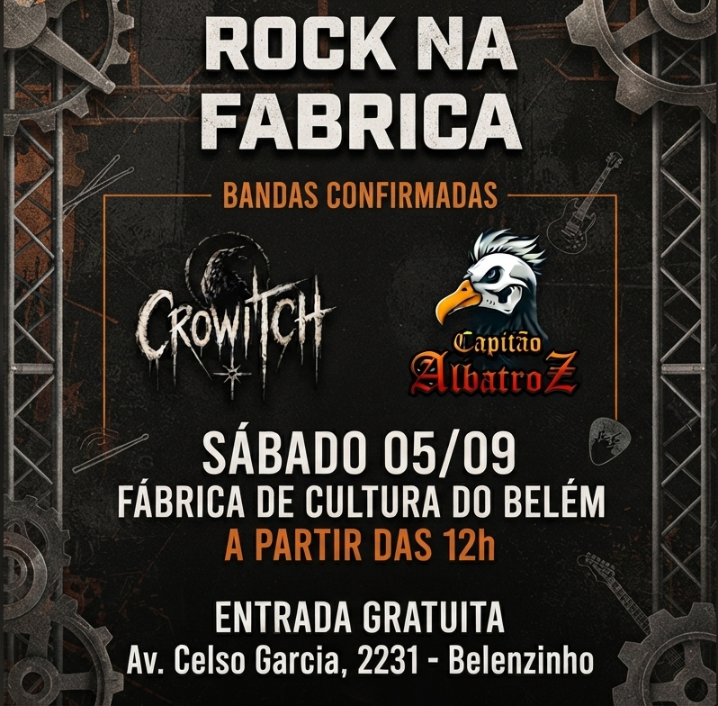
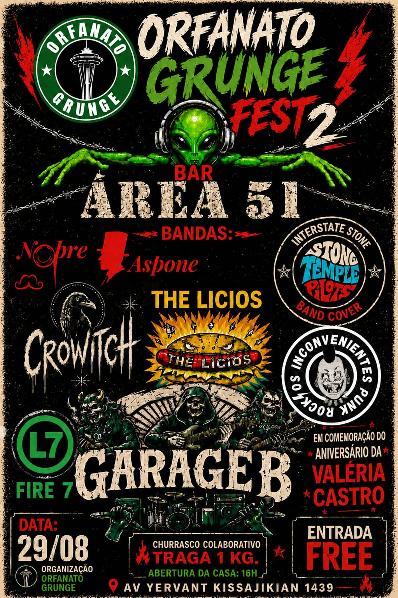
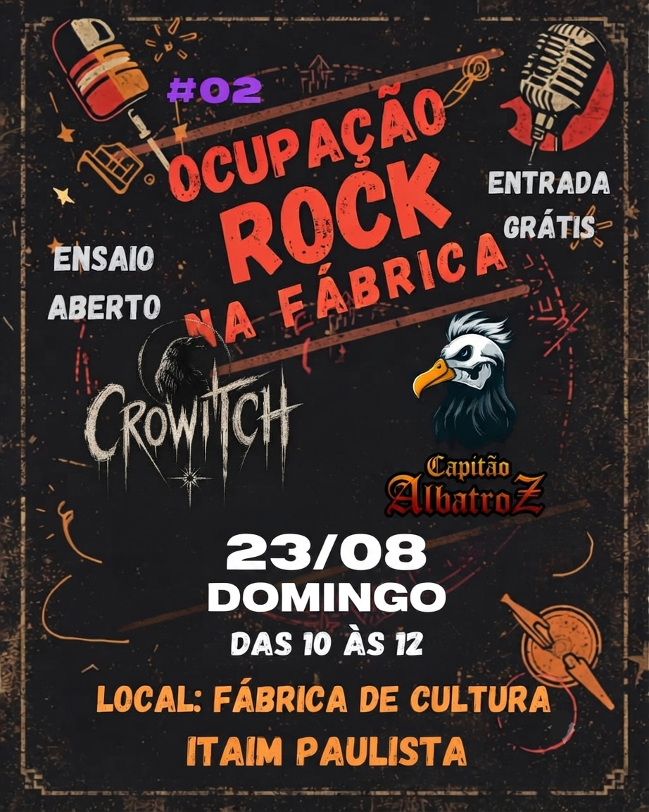

A Crowitch é uma banda autoral de rock alternativo formada por músicos de São Paulo e Guarulhos.
Com influências do grunge e do metal, a banda nasceu da união de músicos com diferentes experiências na cena do rock, movidos pela vontade de criar músicas próprias e construir uma identidade musical. O projeto representa uma nova fase para seus integrantes, que deixaram de lado outros caminhos para investir em um repertório totalmente autoral.
Atualmente, a Crowitch reúne mais de 15 composições próprias e trabalha no lançamento de seus primeiros singles, dando início à construção de uma trajetória independente na cena do rock autoral. formada por Valéria (vocal), Bruce (bateria), Jerms (guitarra), Lombardo (guitarra e instrumentista) e Paiva (baixo).
Get out
Area 51 - Cidade Ademar
Olhos brancos
Fábrica de cultura - Cidade Tiradentes
Até o fim
Fábrica de cultura - Cidade Tiradentes
A cura
Silsi Rock Tatoo Bar - São Miguel
A minha inocência
Bar 3ª Divisão - Cidade Tiradentes
Get out
Ensaio na casa do Marcelo Lombardo
Olhos brancos
Gravação nas Fabricas de Cultura
Itaim Paulista e Belém



